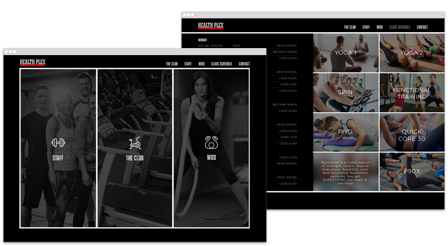
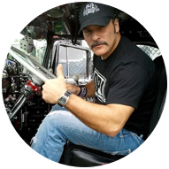
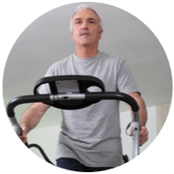
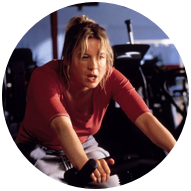
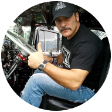
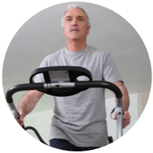
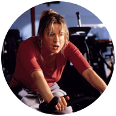
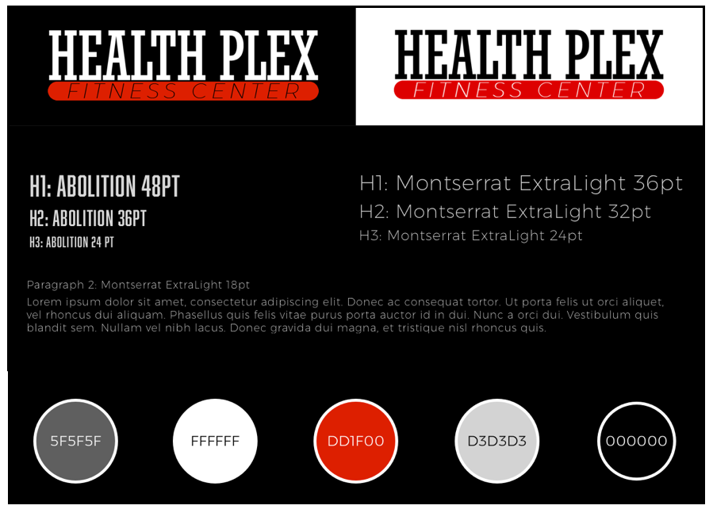

HEATH PLEX FITNESS CENTER
href="#top">Alecia McMahon
HEALTH PLEX FITNESS CENTER
WEB DESIGN & DEVELOPMENT | REBRANDING
The client was a local gym looking to modernize their website and branding. They were looking for a clean, easy-to-use, research-based website that would help drive membership and appeal to a younger audience.

ROLE
UX & UI Designer | Developer
SOFTWARE
Google Surveys, Balsamiq, Photoshop, Illustrator, Sketch, InVision
PROCESS
Research: User Surveys, Personas, User Stories
Branding: Logo Redesign, Style Guide
Design: Site Map & User Flows, Low & High Fidelity Wireframes
Testing: InVision Prototype & Usability Tests
RESEARCH
USER SURVEYS & INTERVIEWS | PERSONAS | USER STORIES
The first step in the process was discussing the client's goals and limitations. Next, I sent out a survey to both members and non-members. The survey received responses from 12 non-members and six members. Of the non-members surveyed, three did not have any type of gym membership. Based on the findings of the survey along with 3 personal interviews, I anazlyzed the original site to identify the main pain points the client was experiencing with their site and made sure to prioritze those points throughout my design process
RESEARCH HIGHLIGHTS
-
74% of members surveyed highlighted staff as one of their favorite aspects of the health club.
-
83% of users noted facility cleanliness as one of their top priorities when chosing a fitness facility.
-
56% of users surveyed claimed a modern facility and equipment were among their top three priorities when deciding to join a gym.
-
100% of users said they would consider switching gyms based on reviews and/or friend recomendations.
PAIN POINTS
-
The original site was missing a staff page and didn't contain any information on ownership or staff qualificaitons.
-
The original site lacked a variety of photos, especially of high concern areas such as locker rooms, sauna, etc.
-
In addition to a lack of photo variety, the original photos were dated, not accurately reflecting the facility.
-
Despite the significant number of positive reviews on Google, Yelp, and Facebook, there were no testimonials quoted or linked on the website.
PERSONAS | USER STORIES
Once the feedback and analysis were done, it was time to move on to creating personas based on the survey. Based on the survey results I created 5 outlines of user personas and then interviewed real people to check my work and add details to the characters I created. My priority was to understand each user's motivation to go to the gym, and how my site design could increase the chances of them not only joining, but continue to show up and stay long-term members. After creating the personas, I outlined user stories to meet the needs of each persona, prioritizing the needs that overlapped the most.
 





BRANDING
LOGO REDESIGN | STYLE GUIDE
TYPOGRAPHY
I wanted to pair a strong powerful typeface with a clean and modern one. I chose to pair Abolition with Monsterrat Extra Light.
COLOR PALETTE
I chose the color palette based on the old logo which is still on the sign outside of the gym. Black is the predominant color of the site with the others following as accent colors.
LOGO
Similar to the color palette, the logo design was a modernization of the previous logo. I opted to stick with a slab-serif as a nod to the 1980s origin of the gym. I went with a thin, wide, italicized font for "fitness center" to contrast the powerful boldness of "Health Plex".

DESIGN
USER FLOWS | WIREFRAMES | MOCKUP
SOFTWARE: BALSAMIQ & SKETCH
rior to designing the pages, I sketched out a sitemap with the user flow on paper. I used color coding to identify the user interaction with the sitemap and highlighted the top page priorities based on the user research. The low-fidelity wireframes were created using Balsamiq, and once I had those complete, I moved on to incorporate the style guide and created high-fidelity wireframes using Sketch.
CONCLUSION
PROTOTYPING | USER TESTING | DEVELOPMENT
I used InVision to create a site prototype and observed users navigating the site. I began the observation with the following prompt:
"Pretend you have just moved to a new city and are looking to join a gym, use this site to determine whether you would consider this gym as a top contender."
After taking notes of their first moves I checked to see if their priorities aligned with the research done at the beginning of the process.
Then, I had each user move through tasks I created from the user flows. Here are some examples of tasks I asked the users:
1. "Identify a fitness class you would like to attend and tell me how much it would cost you if you attended as a member."
2. "Tell me if the cost of membership is in your price range"
3. "You are hoping to hire a personal trainer, how would you go about getting a trainer from this gym"
4. "Sign-up for a free-trial."
Overall, the feedback was positive. There were a few minor design changes which included redesigning a couple pieces of content that a few users thought were buttons when they were not.
PROJECTS